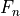
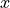
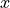

newtest module¶
- newtest.area_of_ellipse(a, b)[source]¶
Computes the area of an ellipse:
where: -
 is the area,
-
is the area,
-  is the semi-major axis,
-
is the semi-major axis,
-  is the semi-minor axis.
is the semi-minor axis.- Parameters:
a – The semi-major axis length.
b – The semi-minor axis length.
- Returns:
The area of the ellipse.
- Return type:
float
- newtest.fibonacci(n)[source]¶
Computes the nth Fibonacci number using Binet’s formula:

where: -  is the nth Fibonacci number.
- Parameters:
n – The index of the Fibonacci sequence.
- Returns:
The nth Fibonacci number.
- Return type:
int
- newtest.logistic_growth(P0, r, t, K)[source]¶
Models the population growth according to the logistic growth model:
where: - is the population at time
 ,
-
,
-  is the initial population,
-
is the initial population,
-  is the growth rate,
-
is the growth rate,
-  is the carrying capacity of the environment.
is the carrying capacity of the environment.- Parameters:
P0 – Initial population size.
r – Growth rate.
t – Time at which to evaluate the population.
K – Carrying capacity.
- Returns:
The population at time
.- Return type:
float
- newtest.logistic_map(x0, r, n)[source]¶
Simulates the logistic map:
where: - is the population at the next time step, -
 is the population at the current time step,
- is the growth rate.
is the population at the current time step,
- is the growth rate.This is often used to model chaotic systems.
- Parameters:
x0 – Initial population size.
r – Growth rate parameter.
n – Number of iterations.
- Returns:
The population after n iterations.
- Return type:
float
- newtest.pendulum_period(length, g=9.81)[source]¶
Calculates the period of a simple pendulum:
where: -
 is the period,
-
is the period,
-  is the length of the pendulum,
-
is the length of the pendulum,
-  is the acceleration due to gravity (default value is 9.81 m/s²).
is the acceleration due to gravity (default value is 9.81 m/s²).- Parameters:
length – The length of the pendulum.
g – The gravitational acceleration (default is 9.81 m/s²).
- Returns:
The period of the pendulum.
- Return type:
float
- newtest.quadratic_formula(a, b, c)[source]¶
Solves the quadratic equation:
Using the quadratic formula:
where: -
, , and  are the coefficients of the quadratic equation.
-  is the solution to the equation.
are the coefficients of the quadratic equation.
-  is the solution to the equation.- Parameters:
a – Coefficient of x^2.
b – Coefficient of x.
c – Constant term.
- Returns:
A tuple containing the two solutions for x.
- Return type:
tuple of floats
 integers:
integers:
 is the sum of squares.
-
is the sum of squares.
-